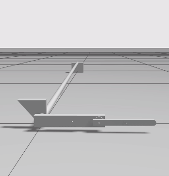

Quick Start¶
This sections gives simple boilerplate code using gym-os2r to perform a simulation of the physical monopod. This simulation provides an environment that parallels the physical properties of the real monopod for reinforcement learning research compatible with OpenAI Gym.
Following the structure of gym-ignition we provide the following classes to train a model for the monopod:
runtime: Provides the code that deals with real-time execution for environments running on the real robot. The implementation for the physical platform isRealtimeRuntime.monopod: Provides the structure of the decision-making logic for the monopod. The code of the task is independent from the runtime, and only the core ScenarIO APIs should be used. The active runtime will then execute the task on either simulated or real worlds by selecting the scenario implementation.gym_os2r.randomizers: Randomizer acts as agym.Wrapperclass that randomizes the domain of the simulated environment every rollout. The two randomizes provided aregym_os2r.randomizers.monopodandgym_os2r.randomizers.monopod_no_rand.gym_os2r.rewards.RewardBase: Abstract base class that provides a simple interface to implement new rewards functions. This class can be passed into themonopod*kwargs.
A minimal example for gym-os2r. This example creates a monopod environment then
performs random actions.
Minimal Example¶
import gym
import time
import functools
from gym_ignition.utils import logger
from gym_os2r import randomizers
from gym_os2r.common import make_env_from_id
# Set verbosity
# logger.set_level(gym.logger.ERROR)
logger.set_level(gym.logger.DEBUG)
env_id = "Monopod-stand-v1"
kwargs = {}
make_env = functools.partial(make_env_from_id, env_id=env_id, **kwargs)
# env = randomizers.monopod.MonopodEnvRandomizer(env=make_env)
env = randomizers.monopod_no_rand.MonopodEnvNoRandomizer(env=make_env)
# Enable the rendering
env.render('human')
# Initialize the seed
env.seed(42)
for epoch in range(1000):
# Reset the environment
observation = env.reset()
# Initialize returned values
done = False
while not done:
# Execute a random action
action = env.action_space.sample()
observation, reward, done, _ = env.step(action)
env.close()
time.sleep(5)

Example of the simulation. The minimal example performs random actions until it reaches the maximum time steps.¶
Environment Ids¶
The provided environment ids with their corresponding kwargs are listed in the table below.
Environment Id |
task_mode |
reward_class |
reset_positions |
|---|---|---|---|
|
|
|
|
|
|
|
|
|
|
|
|
Kwarg Options¶
The gym-os2r package provides multiple kwargs for ease of customizing the
environment. The available kwargs are listed in the attributes of the
monopod class. The following table concisely lists all the
different options:
Required |
Type |
Description |
Available Options |
|---|---|---|---|
|
str |
Defines the configured mode of the monopod i.e. how many actuated joints and how many observed joints. |
|
|
Defines the reward function for the task. The reward class has access to the previous action and the current observation. |
Provided reward functions: |
|
|
[str] |
Array of allowed positions for the monopod to be reset into. This will be randomly chosen during each reset. |
|
Example of how to specify the kwargs in the env. Replace the kwargs with the
ones that are desired.
from gym_os2r import randomizers
from gym_os2r.common import make_env_from_id
from gym_os2r.rewards import BalancingV1
env_id = "Monopod-stand-v1"
kwargs = {
'task_mode': 'free_hip',
'reward_class': BalancingV1,
'reset_positions': ['float', 'lay', 'stand']
}
make_env = functools.partial(make_env_from_id, env_id=env_id, **kwargs)
env = randomizers.monopod_no_rand.MonopodEnvNoRandomizer(env=make_env)
Default Reset Positions¶
The reset positions shipped with the environment are all shown below. You can choose any number of these positions to train with.

|

|

|

|

|
Default Randomizer Features¶
Randomized Property |
Method |
Distribution |
Note |
|---|---|---|---|
|
Scale |
|
Mass of each link in the robot is scaled between 80% and 120% of the default value. The scaling is sampled from a uniform distribution. |
|
Absolute |
|
Joint frictions are sampled from a uniform distribution between 0.01 and 0.1. |
|
Scale |
|
Dampening of each link in the robot is scaled between 80% and 120% of the default value. The scaling is sampled from a uniform distribution. |
|
Absolute |
|
Ground planes surface frictions is sampled from a uniform distribution between 0.8 and 1.2. |
|
– |
– |
Link inertia needs to satisfy the triangle inequality. This means the the link inertia can only have scaling trivially. Will add better randomization in future. Track feature here. |
To use domain randomization while training only one line of code is required to change. The following code block illustrate this.
from gym_os2r import randomizers
from gym_os2r.common import make_env_from_id
from gym_os2r.rewards import BalancingV1
env_id = "Monopod-stand-v1"
make_env = functools.partial(make_env_from_id, env_id=env_id, **kwargs)
env = randomizers.monopod.MonopodEnvRandomizer(env=make_env)
Advanced Features¶
This section explains how to work with the more advanced features gym-os2r
has to offer. Many of these features are still in developed and have not been
extensively tested. If you encountered any issues or questions while using our
package please provide feedback or suggestions.
Custom Reward Class¶
Example of how to creating a custom reward function. This reward will
simply read the angle of the boom relative to the ground and check if it is between some bounds
if it is between the bounds the reward equals one, otherwise zero. This reward function can then be
injected into a training environment using the kwargs. This provides an abstracted approach to
reward functions making development of new control algorithms for the monopod easier.
from gym_os2r.rewards import RewardBase
from gym_os2r.reward.rewards_utils import tolerance
# Example custom Reward
class CustomReward(RewardBase):
"""
Custom example reward.
"""
def __init__(self, observation_index: dict):
super().__init__(observation_index)
# Set the 'task_mode' that are supported y the reward as a safety check.
# in the form self.supported_task_modes = ['free_hip', 'fixed_hip', 'fixed', ... ]
self.supported_task_modes = self._all_task_modes
def calculate_reward(self, obs: Observation, action: Action) -> Reward:
_LOW = 0.2
_HIGH = 0.4
# Observation array can be indexed using the name of the observation you wish to
# index. This is done using the observation_index dictionary which has indexes in
# the format '<jointname>_pos', and '<jointname>_vel'. The example below gets
# the position of the planarizer_pitch_joint.
cur_pitch_pos = obs[self.observation_index['planarizer_pitch_joint_pos']]
# tolerance is a helper function to scale and bound the observation.
return tolerance(cur_pitch_pos, (_LOW, _HIGH))
kwargs = {'reward_class': ExampleV0}
make_env = functools.partial(make_env_from_id, env_id=env_id, **kwargs)
env = randomizers.monopod.MonopodEnvRandomizer(env=make_env)
Custom Reset Position¶
The information defining each reset position is below. Each item is defined as a xpath. Lay implies the robot will be horizontal in a ‘laying’ position. ‘planarizer_pitch_joint’ defines the angle of the planarizer pitch from horizontal.
resets:
name_reset:
laying_down: True
planarizer_pitch_joint: 0.4
We can set/modify the value for a new/existing reset position following the method below.
from gym_os2r import randomizers
from gym_os2r.common import make_env_from_id
from gym_os2r.models.config import SettingsConfig
reset_position = 'name_reset'
cfg = SettingsConfig()
xpath = 'resets/' + reset_position
new_pitch = 0.4
laying_down = True
cfg.set_config(laying_down, xpath + '/laying_down')
cfg.set_config(new_pitch, xpath + '/planarizer_pitch_joint')
env_id = "Monopod-stand-v1"
kwargs = {
'reset_positions': ['name_reset'],
'config': cfg
}
make_env = functools.partial(make_env_from_id, env_id=env_id, **kwargs)
env = randomizers.monopod_no_rand.MonopodEnvNoRandomizer(env=make_env)
Custom Model Configs¶
The model configuration handles the following items:
1. Defines the joint action and observation limits
2. Defines joints as periodic or linear observations.
3. Defines task_mode (Which model is being used i.e fixed_hip, free_hip, etc)
4. Allows observation masking (Omit specified observation from observation space)
5. Defines robot dimensions. Used to calculate leg angles to match specific reset height
Warning
I do not recommend changing the model config file without a complete understanding of the projects software stack. Configuration files might be fragile and will be updated in future along with gym-os2r.
If you still want to update the model config here is a short explanation on
what to expect. Firstly It is recommended to be have gym-os2r installed as a
developer. The config implementation can be found here.
The default configuration file is found in gym_os2r/models/config/default/settings.yaml.
The example showing how to update or add reset positions here, shows how the configuration can be
updated externally (be careful, there aren’t many safe guards for bad modifications).
Alternatively you can update the settings.yaml file directly. This is the recommended method for larger
changes. The settings file has a little bit of documentation describing what changing each
variable represents.
Note
If you have a better idea on how to structure the model configuration
(joint information and reset information) or more generally gym-os2r I
would gladly attempt to implement/reformat the package structure.